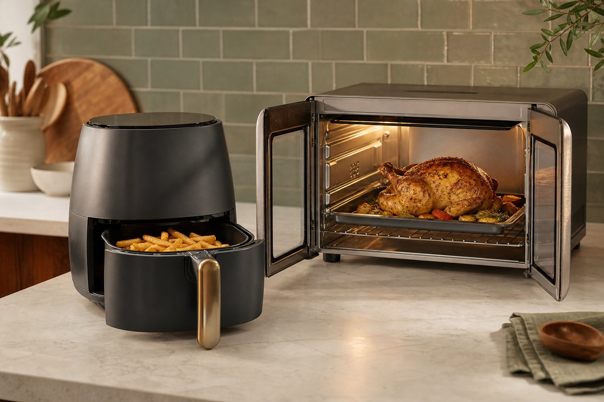

Compare · Choosing the shape
Basket or oven-style air fryer: what should you compare?

This is the first fork in the road, and it’s worth slowing down for. Basket-style and oven-style machines both move hot air fast — but they disagree about almost everything else: footprint, capacity shape, how you interact with food mid-cook, and what cleanup looks like on a Tuesday night.
Start with what you actually cook
Before any spec comparison, answer honestly:
- Is dinner usually one thing (fries, wings, a sheet of vegetables) or a plate (protein + two sides)?
- Do you cook from frozen on weeknights, or mostly reheat and roast?
- How often do you want to check or shake food while it cooks — and how often will you actually do it?
- Is this machine a second oven (holiday overflow, summer heat relief) or the main event?
Those four answers usually decide the shape. The specs just confirm it.
The trade-offs, side by side
| What to compare | Basket style | Oven style |
|---|---|---|
| Capacity shape | Deep and compact; great for tumbling foods, awkward for flat batches | Wide and shallow; racks give you layers and flat surface area |
| Mid-cook interaction | Shake the basket — fast, but you open the whole chamber | Peek through the door or slide a rack out; less heat loss per check |
| Footprint | Smaller counter claim, usually no door swing to plan for | Taller and deeper; door clearance and front loading space matter |
| Cleanup | One basket (or two) plus a crumb tray; typically fewer parts | Racks, trays, sometimes a spit — more surface area to wash |
| Learning curve | Low: dial or presets, set and shake | Higher: rack positions, tray choices, more functions to learn |
| Best at | Crisp, tossable food; fast preheat; small households | Batch and layered cooking; pizza, toast, bake, rotisserie-style jobs |
Comparison framework — not a test result. We publish measured performance claims only when a documented hands-on method exists (see methodology).
What each shape is quietly bad at
Honest lists are the useful ones:
- Basket machines punish flat foods — anything that wants a single layer gets crowded fast, and crowding is the enemy of crisp. Two-basket models help, but they split one machine’s heat and attention.
- Oven-style machines ask for more of your kitchen: counter depth, door swing, and a place for the accessories. They also heat a bigger box — useful for batches, wasteful for two chicken cutlets.
Questions to take to any listing
- What fits in one layer at the capacity they advertise? Ask what the usable area is, not just the volume.
- Which parts go in the dishwasher — basket only, or racks and trays too? (Observed listings on our queue say “Dishwasher Safe Frying Baskets” and similar — treat it as a claim to check part by part.)
- What is the footprint with the door open, or with both baskets out?
- How loud is the fan at the setting you’ll use nightly? Listing pages rarely say; owner questions and reviews do.
- What happens after the warranty year? Parts availability is a real ownership question.
Where the queue stands today
Two basket-style machines and one French-door oven-style model are on our test queue right now, with their observed listings quoted verbatim: See the 6-quart dual basket on Amazon Sponsored and See the 26QT French door on Amazon Sponsored. Both links are sponsored and each earns us a commission from qualifying purchases.